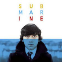

My Favourite Movies
Here is my top list of most favourite movies based on my preference. Where I can watch these more and more again without without feeling bored
1. Interstellar
| Movie | Interstellar |
| Movie Summary | "Interstellar" is a science fiction film directed by Christopher Nolan. The story revolves around a near-future Earth facing environmental collapse, leading a group of astronauts, including former NASA pilot Cooper (Matthew McConaughey), on a space mission to find a new habitable planet. As they navigate through a wormhole near Saturn, the crew encounters time dilation and various challenges, exploring the themes of love, time, and the survival of humanity. The film is known for its stunning visuals, intricate plot, and scientific accuracy. |
| Review | I think Christopher Nolan's Interstellar is his best work to date, even though it may only be ranked seventh in the general public's top ten space films. While exploring the basic concept that human life goes beyond survival and involves dealing with our nature, where we might become our foes, the film brilliantly portrays the core concept of space travel. Through navigating existential challenges, Interstellar shows what amazing things people may accomplish when faced with extreme circumstances. This film stands out because it stays away from needless intricacy. Interstellar is a great film because it explores personal tragedy and the deep love for family in a heartfelt way and its amazing beginning makes for a great first impression. I really recommend this movie even though it is quite heavy to watch. |
| Rating | |
2. Men In Black 3
| Movie | Men In Black 3 |
| Movie Summary | "Men in Black 3" is a science fiction action-comedy film directed by Barry Sonnenfeld. The story follows Agent J (Will Smith) and Agent K (Tommy Lee Jones), members of a secret organization that monitors extraterrestrial activity on Earth. In this installment, Agent J discovers that Agent K's life is in danger from an alien criminal named Boris the Animal (Jemaine Clement). To save his partner and prevent an alien invasion, Agent J travels back in time to 1969 to team up with a younger version of Agent K (Josh Brolin). The film explores themes of friendship, trust, and the consequences of choices, all within the comedic and action-packed world of the Men in Black. |
| Review | Excellent. My personal favourite of the series. This one has the best story. A brilliant time twister of a yarn that sends Will back to the 60s to team up with younger K, brilliantly played by Josh Brolin. This movie showed a surprising amount of heart too. |
| Rating | |
3. Coco
| Movie | Coco |
| Movie Summary | "Coco" is a heartwarming animated film produced by Pixar Animation Studios. The story revolves around a young Mexican boy named Miguel who dreams of becoming a musician, despite his family's longstanding ban on music. On the Day of the Dead, a magical journey transports Miguel to the Land of the Dead, where he seeks the help of his deceased ancestors to unravel family secrets and pursue his passion for music. The film beautifully explores themes of family, memory, and cultural heritage, delivering a visually stunning and emotionally resonant tale. |
| Review | This is one of my all-time favorite movies. It touches on love, loss, coming of age, finding yourself, dealing with grief and the importance of family. This movie has such a deep meaning to me and it pulls my heart strings every time. Love and family make the world go round. Forgiveness, and change are important. Pattinson’s acting in this was remarkable. It was dark, serious, sentimental, but what I liked most about it - was that it was real. There were fun moments, there were light moments, but the movie itself has a sad undertone which I think is heartbreaking, but remarkable. The storyline is exquisite and there is never a dull-moment. I can watch it over and over again and not get bored. |
| Rating | |
My Favourite songs
Here is my top list of most favourite songs that I will sing and listen to every single day. Most songs I chose are based on my interest in song.
Fall For You |
Glimpse Of Us |
Helena |
 Stuck On The Puzzle |
Copyright ©2023 Izzah Iskandar